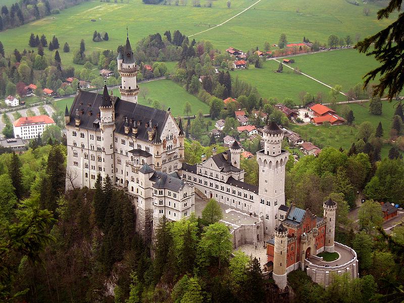

Easing Functions
The straightforward but naive way to perform animations involves a linear mapping
between time and the value being animated. If we are 100ms into a 400ms animation,
for example, the animation is 25 percent done. If we are animating the opacity property
from 1.0 to 0.0 (for a fadeOut() call, perhaps) in a linear animation, the opacity should
be at 0.75 at this point of the animation. It turns out, however, that visual effects are
more pleasing if they are not linear. So jQuery interposes an “easing function” that
maps from a time-based completion percentage to the desired effect percentage. jQuery
calls the easing function with a time-based value between 0 and 1. It returns another
value between 0 and 1 and jQuery computes the value of the CSS property based on
this computed value. Generally, easing functions are expected to return 0 when passed
the value 0 and 1 when passed the value 1, of course, but they can be nonlinear between
those two values and this nonlinearity makes the animation appear to accelerate and
decelerate.
jQuery’s default easing function is a sinusoid: it starts off slow, then speeds up, then
slows down again to “ease” the animation to its final value. jQuery gives its easing
functions names. The default one is named “swing”, and jQuery also implements a
linear function named “linear”. You can add your own easing functions to the
jQuery.easing object:
jQuery.easing["squareroot"] = Math.sqrt;
The jQuery UI library and a plug-in known simply as “the jQuery Easing Plugin” define
a comprehensive set of additional easing functions.

19.5.3 Canceling, Delaying, and Queuing Effects
jQuery defines a few more animation and queue-related methods that you should know
about. The stop() method is first: it stops any currently executing animations on the
selected elements. stop() accepts two optional boolean arguments. If the first argument
is true, the animation queue will be cleared for the selected elements: this will cancel
any pending animations as well as stopping the current one. The default is false: if this
argument is omitted, queued animations are not canceled. The second argument speci-fies whether the CSS properties being animated should be left as they are currently or
whether they should be set to their final target values. Passing true sets them to their
final values. Passing false (or omitting the argument) leaves them at whatever their
current value is.
When animations are triggered by user events, you may want to cancel any current or
queued animations before beginning a new one. For example:
// Images become opaque when the mouse moves over them.
// Be careful that we don't keep queueing up animations on mouse events!
$("img").bind({
mouseover: function() { $(this).stop().fadeTo(300, 1.0); },
mouseout: function() { $(this).stop().fadeTo(300, 0.5); }
});
The second animation-related method we’ll cover here is delay(). This simply adds a
timed delay to the animation queue: pass a duration in milliseconds (or a duration
string) as the first argument and a queue name as the optional second argument (the
second argument is not normally needed: we’ll talk about queue names below). You
can use delay() in compound animations like this one:
// Quickly fade out halfway, wait, then slide up
$("img").fadeTo(100, 0.5).delay(200).slideUp();